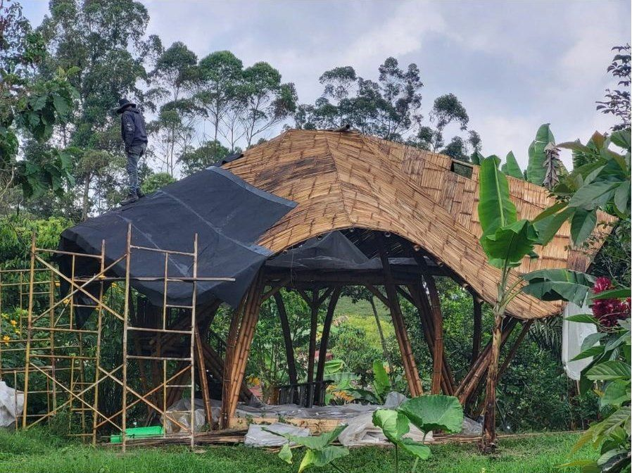
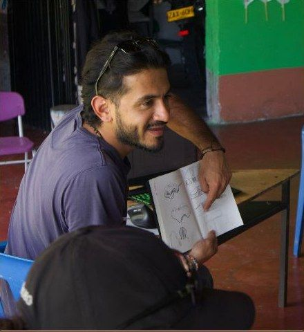

Terra + Bamboo
Taller en el guadual · vista de dron
Especialistas en arquitectura sostenible, diseño paramétrico y construcción con bambú, tierra y materiales naturales.
Desde viviendas hasta eco-hoteles y desarrollos turísticos, acompañamos cada proyecto desde la idea inicial hasta la construcción.



Bambú, tierra y recursos locales seleccionados por su comportamiento estructural, eficiencia ambiental y belleza natural.
Diseño paramétrico, modelado BIM y visualización 3D para optimizar cada decisión antes de construir.
Arquitectura que reduce emisiones, aprovecha los recursos del lugar y crea espacios preparados para durar generaciones.
Compartir conocimiento también es construir. Organizamos talleres, desarrollamos maquetas de precisión y colaboramos con comunidades para fortalecer capacidades locales.
Teboo es un estudio colombiano de arquitectura e ingeniería especializado en construcción sostenible.
Nuestra práctica combina investigación, experimentación material, fabricación digital y conocimiento constructivo para desarrollar proyectos contemporáneos con materiales naturales.
Creemos que el bambú no representa el pasado de la construcción, sino una de sus mayores oportunidades para el futuro.
La arquitectura debe responder al clima, al territorio y a las personas que la habitan. Por eso cada proyecto nace de un proceso de análisis donde combinamos diseño bioclimático, eficiencia estructural y una profunda comprensión de los materiales naturales.
No buscamos imponer una forma, sino descubrir la solución más inteligente para cada lugar.


Arquitecto

Arquitecto
Arquitectas, diseñadoras y constructores que se suman a cada proyecto.
Cada forma empieza observando algo: un grano de café, un cocuyo, el caparazón de una tortuga.


Arrastra para recorrer, haz clic para ampliar.
Servicios integrales para una arquitectura sostenible de alto nivel.

Compartimos conocimiento para transformar la forma de construir.
A través de workshops, investigaciones y recursos técnicos buscamos impulsar una nueva generación de arquitectos y constructores especializados en bioarquitectura.
Construyamos algo que deje una huella positiva.
Cuéntanos tu idea. Estaremos encantados de ayudarte a convertirla en un proyecto sostenible, funcional y duradero.
Iniciar conversación ahora